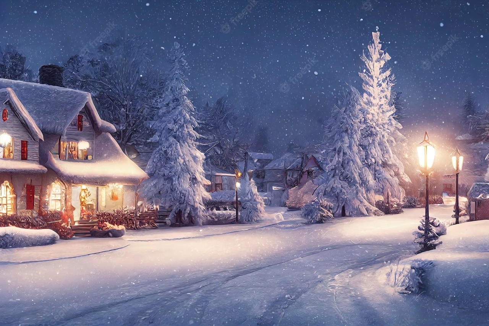
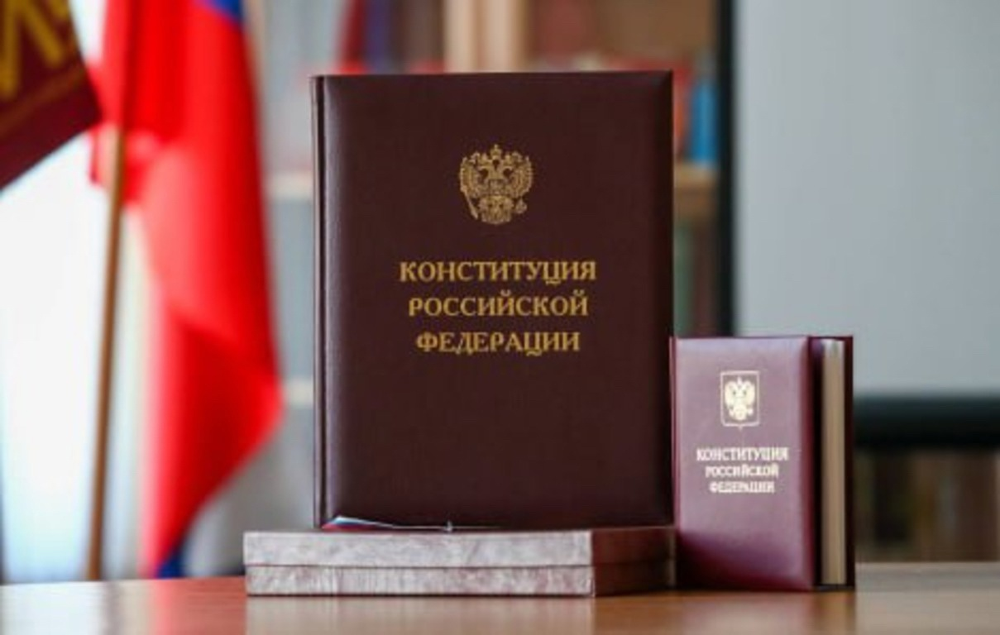
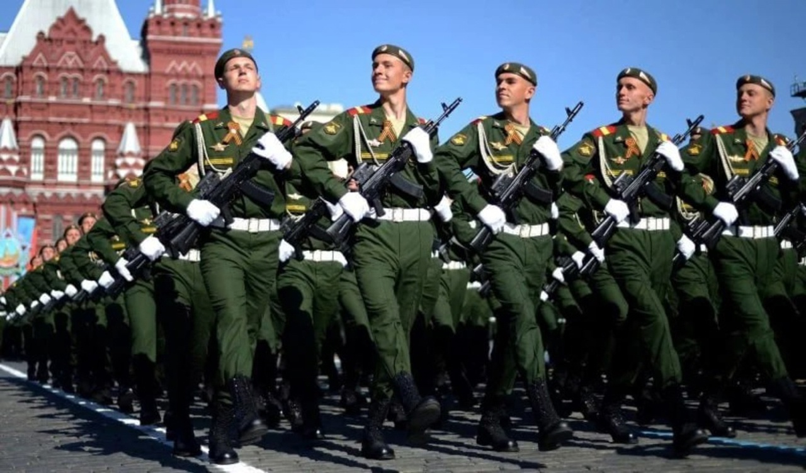

Зима в России богата не только на снег и морозы, но и на праздники. Причем многие из них не просто "красные дни календаря", а настоящие торжества, сопровождаемые веселыми гуляньями, а также выходными. Какие же зимние праздники есть в России? Когда и как они отмечаются?
Декабрь – это новогодний месяц и города России начинают украшать уже с первых дней декабря. торжественное убранство город получает обычно к 20 числу. В начале месяца отмечаются патриотические праздники и памятные дни.

· День Конституции Российской Федерации - 12 декабря
12 декабря отмечается День Конституции Российской Федерации — праздник принятия Конституции в современной России. В Советском Союзе до 1977 года День Конституции отмечали 5 декабря – в день принятия Конституции Союза ССР в 1936 году
Январь - Январь обязывает продолжать торжественный темп, взятый в конце предыдущего года. С новыми надеждами в чудо пробуждается город 1 января, а кто-то не засыпает вообще, гуляя всю новогоднюю ночь по его заснеженным и сказочным улицам.
· Новый год – в ночь с 31 декабря на 1 января
Новый год по всей России, отмечается в ночь с 31 декабря на 1 января. Главный реформатор новогодних гуляний в России – Пётр I Великий ввёл традицию весьма пышно отмечать Новый год: с песнями и плясками, запуском шутих, салютов и фейерверков, украшением хвойными ветками домов и общественных палат. Дети получают подарки, без последних не обходятся и взрослые – любят их и дарить, и получать.
· День российского студенчества и Татьянин день - 25 января
25 января "Татьянин день" и "День российского студенчества" широко празднуется всеми студентами страны, бывшими и настоящими. Свои корни праздник берёт из православия. Его название произошло от имени раннехристианской мученицы Татьяны Римской.

Февраль - Последний месяц зимы – короче всех в году, но бывает суровее всех зимних месяцев. Но россияне – оптимисты и считают, что «у природы нет плохой погоды», да и вообще уныние – грех, поэтому жители и в феврале радуются, несмотря ни на что: ни на вьюгу за окном, ни на слякоть с ледяной крошкой под ногами.
· День защитника Отечества - 23 февраля
Это праздник защитников – воевавших и военных, а также защитников – в самом широком смысле этого слова. Этот чисто мужской праздник отмечается 23 февраля.В этот день принято чествовать, в первую очередь, ветеранов, военнослужащих и сотрудников правоохранительных органов. Но для многих россиян и жителей стран бывшего СССР 23 февраля –День настоящих мужчин.